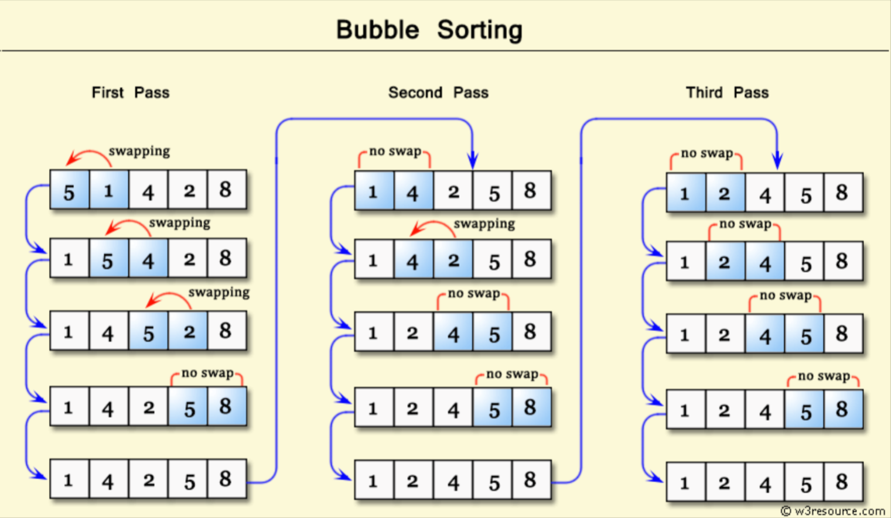
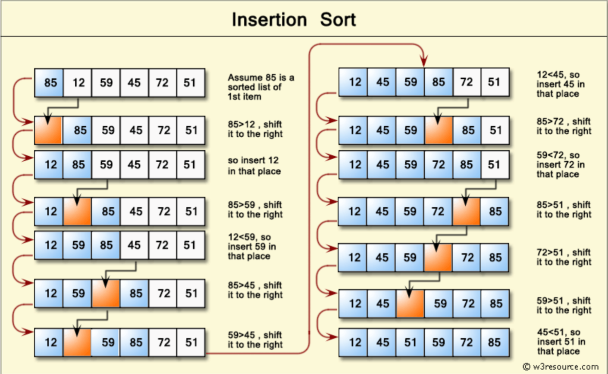
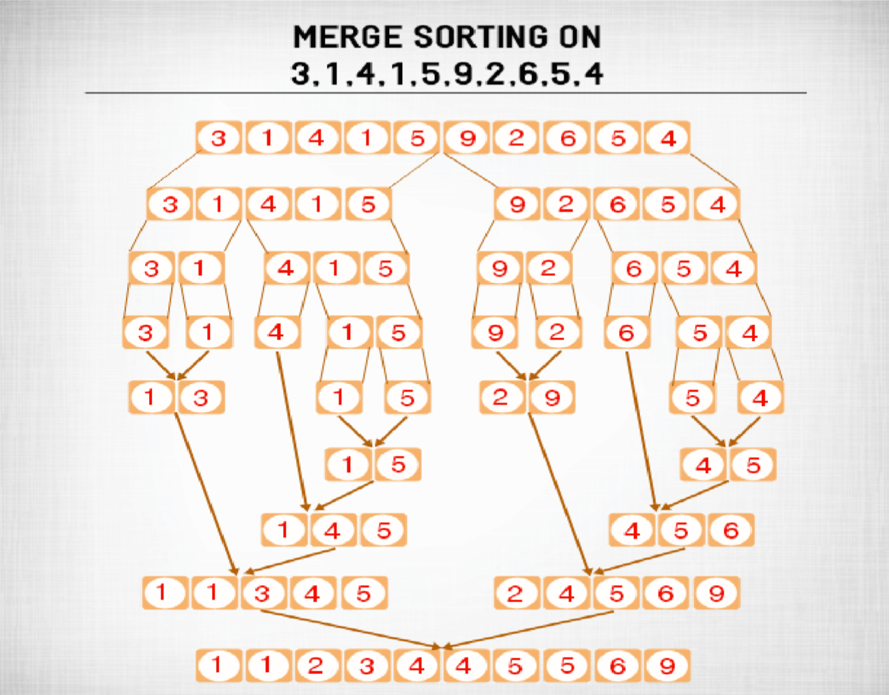
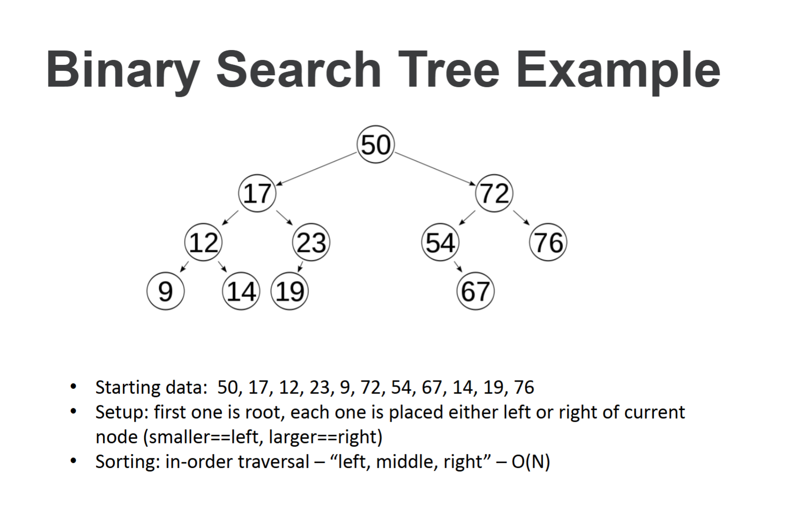
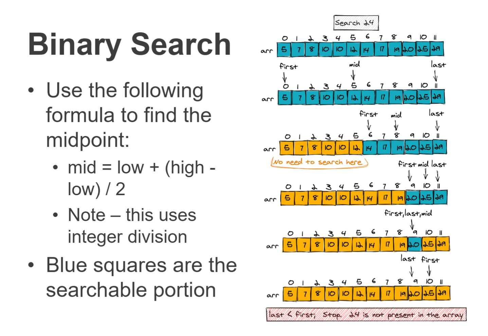
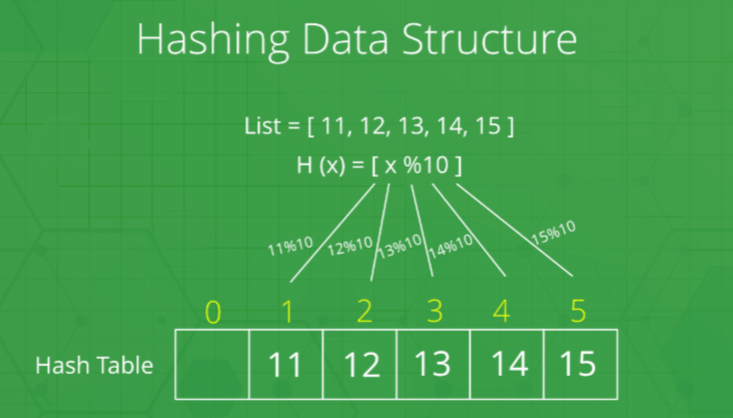

Sorting and Searching
Vocabulary for Sorting
- Pass
- We have a "pass" through a vector if every element is looked at, and we are going back to the beginning index to repeat steps in the algorithm (this happens in Bubble Sort)
- Ascending Order
- Descending Order
Bubble Sort
- Bubble sort works by repeatedly swapping adjacent elements if they are in wrong order.
- The algorithm will take the first pair in the list (index 0 and 1), see if they are in the correct order, and if not, swap.
- Then the algorithm will take the next pair (potentially new index 1, index 2), and repeat.
- The algorithm is named Bubble Sort because the elements with greater value than their surrounding elements "bubble" towards the end of the list.

Bubble Sort Pseudocode
begin BubbleSort(list)
for all elements of list
if list[i] > list[i+1]
swap(list[i], list[i+1])
end if
end for
return list
end BubbleSort
Selection Sort
- Selection sort works by stepping through each index of the vector (think of this index as the "selected" index) and placing the correct value in that index. It will not move again.
- We start at index 0 as the selected index. We look at every value to the right of the selected index and find the smallest value. We swap the value at the selected index (0) with the smallest value found.
- Next, we move the selected index to index 1. We repeat to find the smallest value, and swap.
- If there are no values to the right of the selected index that are smaller, no swap will occur.
- Unlike Bubble Sort, Selection Sort does not go back to the previous indexes at any point.
- Selection sort is the only algorithm where we decide the *final* resting spot of a value.
- If we are running the algorithm and the selected index is 6 currently, then we know indexes 0-4 are sorted and their values will not change.
Selection Sort Pseudocode
begin SelectionSort(list)
n: size of list
for i = 1 to n - 1
/* set current element as minimum */
min = i
/* find what element is actually the minimum */
for j = i + 1 to n
if list[j] < list[min]
min = j
end if
end for
/* swap the minimum element with the current element */
if min != i then
swap(list[i], list[min])
end if
end for
end SelectionSort
Insertion Sort
- Insertion sort works by splitting the vector into two parts, the sorted portion, and the unsorted portion.
- Selection sort also has a sorted portion, but insertion sort's sorted portion is only RELATIVE to the other items in the sorted porition. Their final resting index is not determined and may change as other values are moved to the sorted portion.
- Begin with index 0 as the "sorted" portion (a sorted portion consisting of one item).
- Take the first index to the right of the sorted portion (i.e. the first element in the unsorted portion), and look backwards through the unsorted portion and "insert" the value where is belongs.
- This is the most common way people sort playing cards in their hand.

Insertion Sort Pseudocode
begin InsertionSort(list)
n: size of list
for i = 1 to n - 1
key = list[i]
j = i - 1
while j >= 0 and list[j] > key
list[j + 1] = list[j]
j = j - 1
end while
list[j + 1] = key
end for
end InsertionSort
Merge Sort
- One of the "divide and conquer" algorithms.
- Divide the array into subarrays
- Keep dividing until get to size 1 arrays
- Visualize each new division as a level (write vertically)
- Start merging at the lowest level
- As you move up each level you will be merging sorted arrays
- Time complexity is O(nlog n)

Binary Search Tree
- Great for searching, but also gives us sorted data via a very simple O(N) algorithm called "in-order traversal."
- Must pay a one-time cost for setup (memory and CPU cycles)
- After setup, can use extremely fast search and sort an infinite number of times (in theory)

Linear Search
- Linear Search is a very simple algorithm, essentially a for loop.
- A sequential search is made over items one by one. Each item is checked and if a match is found, then that item is returned, otherwise the search continues till the end of the list.
Linear Search Pseudocode
begin LinearSearch(list, target)
for i = 0 to length(list) - 1
if list[i] == target
return i
end if
end for
return -1
end LinearSearch
Binary Search
Binary is a much more efficient searching algorithm (i.e. will find matches faster, on average).
Algorithm:
- Make sure the list is sorted before starting the algorithm.
- Designate a beginning, midpoint, and end for the list
- See if the value you are searching for is greater than, less than, or equal to the midpoint.
- If it's greater than the midpoint, remove the bottom half from the searching area and repeat. If its less than the midpoint, remove the top half from the searching area and repeat.
- If it's equal to the midpoint, then you have a match. If you have reached a searching area of size 1, and still haven't found a match, then the value is not in the list. This is implemented by checking if the "end" is less than the "begin"

Binary Search Pseudocode
begin BinarySearch(A, n, x)
A : sorted array
n : size of array
x : value to be searched
set lowerbound = 1
set upperbound = n
while x not found
if upperbound < lowerbound
return "not found"
end if
set midPoint = (lowerbound + upperbound) / 2
if A[midPoint] == x
return midPoint
else if A[midPoint] < x
set lowerbound = midPoint + 1
else
set upperbound = midPoint - 1
end if
end while
end BinarySearch
Dictionaries (Hash Tables)
Different languages use different terms for the same data structure
- There are implementation variants, but the main idea is identical:
- Generate a code based on the data itself. The code will either serve as the storage address or will lead us to the storage address (via an encoding)
- Effectively, this means that searching for data in a dictionary/hash table is O(1) i.e., instant/direct, without any actual search algorithm needed.
